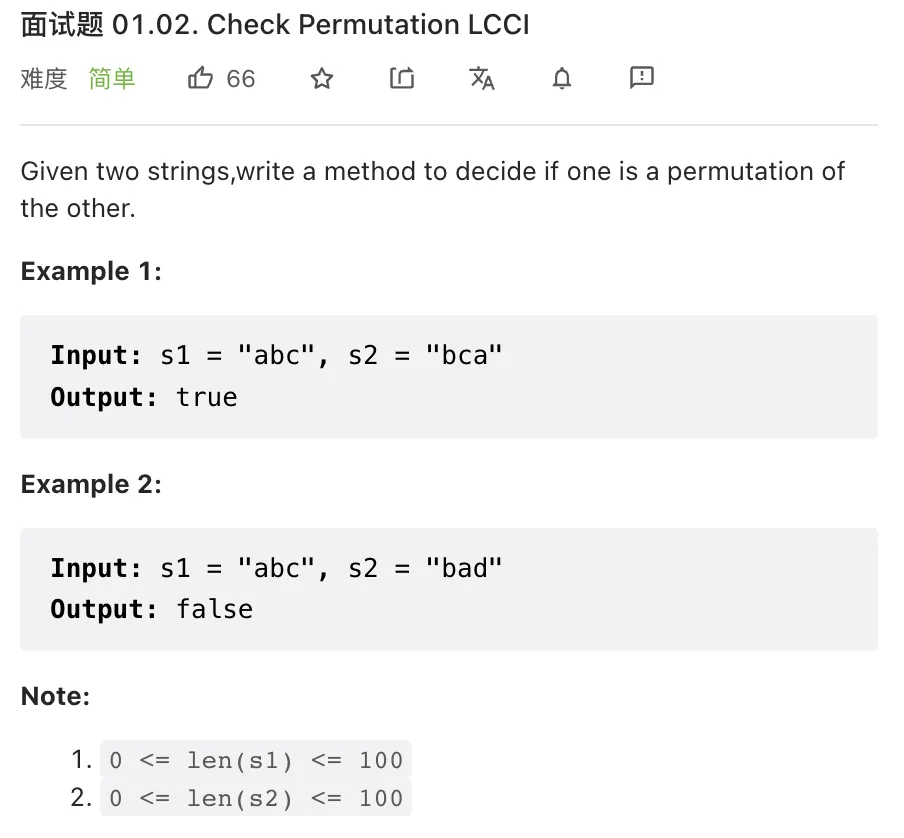

面试题 01.02. 判定是否互为字符重排
Question

✍🏽 My Solution
class Solution {
public boolean CheckPermutation(String s1, String s2) {
if (s1.length() != s2.length()) return false;
HashMap<Character, Integer> map = new HashMap<Character, Integer>();
for (int i = 0; i < s1.length(); i++) {
char c = s1.charAt(i);
int count = 1;
if (map.containsKey(c)) {
count += map.get(c);
}
map.put(c, count);
}
// s2跟s1匹配
for (int i = 0; i < s2.length(); i++) {
char c = s2.charAt(i);
if (!map.containsKey(c)) {
return false;
}
int count = map.get(c);
if (count == 0) return false;
map.put(c, count-1);
}
// 检查map是否为空
for (int i = 0; i < s1.length(); ++i) {
char c = s1.charAt(i);
if (map.get(c) != 0) return false;
}
return true;
}
}
🧠 Thought Process
- Why did I choose this particular implementation?
- 哈希表
- What is the time/space complexity of my solution? How do I know?
- time: O(m+n)
- space: O(n)
- What mistakes did I make?
- 一開始忘記是字串 沒有轉成char處理
- 忘記遍歷s1判斷是否 不等於0
Solution #1 [王爭-哈希表]
执行用时：0 ms, 在所有 Java 提交中击败了100.00%的用户
内存消耗：39 MB, 在所有 Java 提交中击败了49.84%的用户
class Solution {
public boolean CheckPermutation(String s1, String s2) {
if (s1.length() != s2.length()) return false;
HashMap<Character, Integer> map = new HashMap<Character, Integer>();
for (int i = 0; i < s1.length(); i++) {
char c = s1.charAt(i);
int count = 1;
if (map.containsKey(c)) {
count += map.get(c);
}
map.put(c, count);
}
// s2跟s1匹配
for (int i = 0; i < s2.length(); i++) {
char c = s2.charAt(i);
if (!map.containsKey(c)) {
return false;
}
int count = map.get(c);
if (count == 0) return false;
map.put(c, count-1);
}
return true;
}
}
Explanation (in my words)
- How does their solution work?
-
其他思路：排序
排序 time: O(nlogn+mlogm)、space:O(1)
-